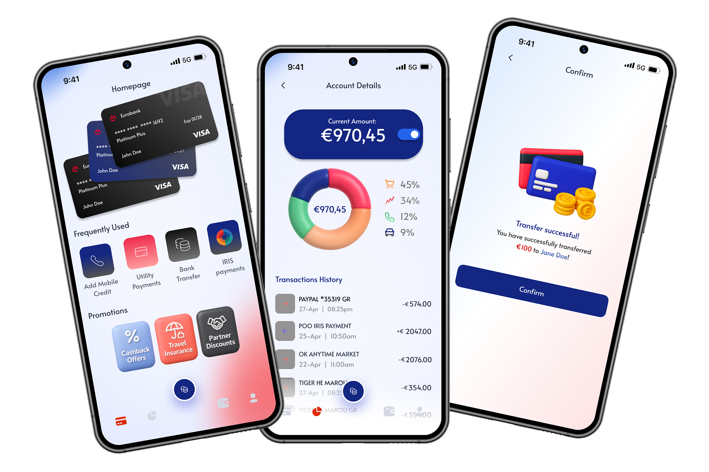
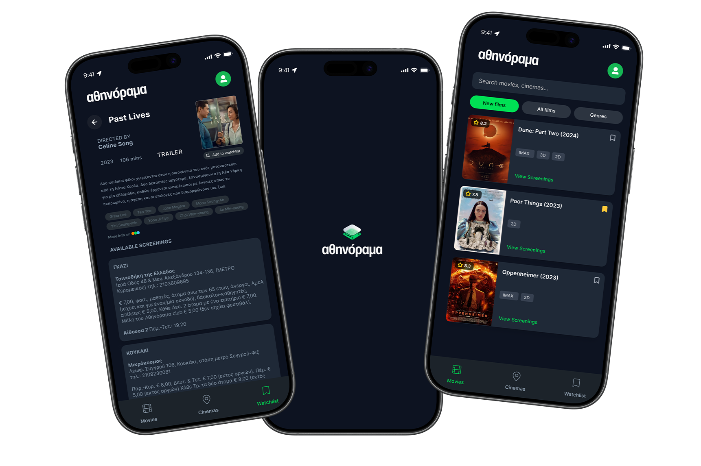

Design that holds up in production. Built by someone who understands both sides of the handoff.
Featured Project
A minimal project management tool for small teams who need focus, not features. Kanban-based, mobile-first, custom drag system — zero library dependencies.
A task board focused on speed and spatial clarity — drag-and-drop without the overhead.
Case Studies

Mobile BankingRedesigned the core banking experience to reduce cognitive load — cutting task completion steps and making key actions reachable in under two taps.
Read Case Study →
Cinema DiscoveryRedesigned the discovery experience to reduce friction and surface showtimes faster — fewer taps, clearer hierarchy, less time deciding.
Read Case Study →About
I design products that are clear to use and practical to build. My focus is reducing complexity — turning cluttered flows into interfaces that feel obvious in hindsight. I work across design and front-end, which means I think about constraints early and hand off work that doesn't fall apart in development.
Athens, Greece
UI/UX Design · Front-End Development
Freelance · Remote · Hybrid